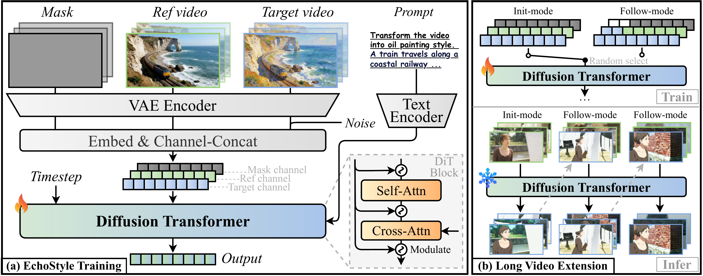
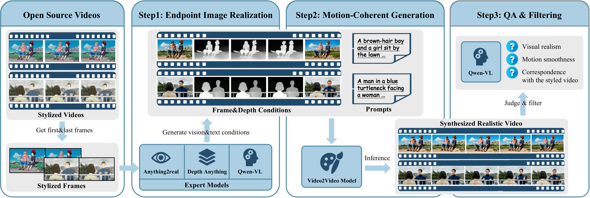

Abstract
While image stylization has been studied extensively, video stylization remains a critical and largely unsolved challenge in the field of intelligent content creation. Existing methods, usually utilizing a reference image as the style prior, suffer from content leakage, data scarcity and limited adaptability to long videos, leading to suboptimal results with severe style drift and motion distortion. For these issues, we present EchoStyle, a scalable text-driven framework to achieve high-quality stylization of videos with arbitrary lengths. To start with, we construct a video-to-video architecture to appropriately re-fuse the video content and the text style. To address data scarcity, we pioneer an automatic reverse-synthesis pipeline to establish V-Style20k, a large-scale stylization dataset of 20k high-quality video pairs. To facilitate long video stylization, we devise an init-follow-mode mechanism along with a sliding-window inference strategy. Extensive experiments demonstrate EchoStyle's excellent performance across a wide range of artistic styles, even comparable to leading closed-source solutions. All the codes, model weights and dataset will be open-sourced.
Method

Overview of the EchoStyle framework. (a) Training: We map the mask, reference video, and target video into the shared latent space, followed by visual alignment. These multi-channel embeddings are then fed into a DiT for stylized video generation, guided by textual prompts. (b) Long Video Extension: We propose an init-follow-mode training strategy. During training, these modes are randomly selected. In the inference stage, long videos are generated autoregressively.

Data synthesis pipeline. Our pipeline is organized into three stages: first, endpoint image stylization establishes the style for boundary frames; second, motion-coherent V2V generation produces semantically-aligned video sequences; and finally, automated filtering via VLMs is employed to vet video quality and discard suboptimal samples.
Short Video Stylization Results
EchoStyle achieves high-quality stylization across diverse artistic styles. Each video shows the source (left) and stylized result (right).
🎨 Oil Painting Style
🖌️ Watercolor Style
✨ Pixar 3D Animation Style
🌸 Japanese Anime Style
🏔️ Ink Wash Painting Style
🏰 Disney 3D Animation Style
Long Video Stylization Results
EchoStyle extends stylization to minute-level videos via a sliding-window autoregressive strategy with init-follow-mode mechanism.
🏰 Disney Style — Long Video Extension
🌸 Japanese Anime Style — Long Video Extension
BibTeX
@inproceedings{li2026echostyle,
title={EchoStyle: Unlocking High-Fidelity Video Stylization with Reverse Data Synthesis},
author={Li, Huaqiu and Wang, Jiahao and Cai, Sijia and Sheng, Hualian and Deng, Bing and Ye, Jieping and Luo, Wenhan},
booktitle={European Conference on Computer Vision (ECCV)},
year={2026}
}